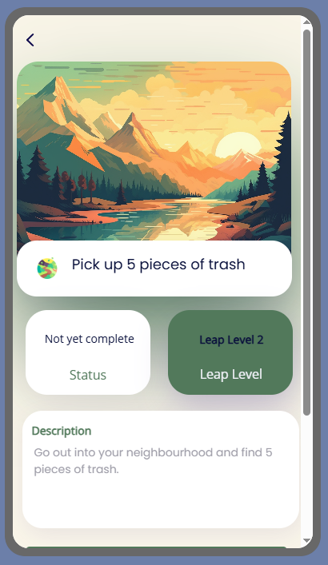
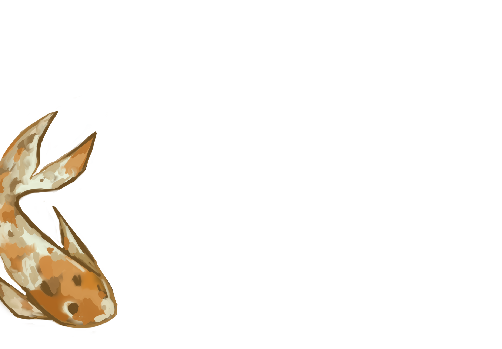
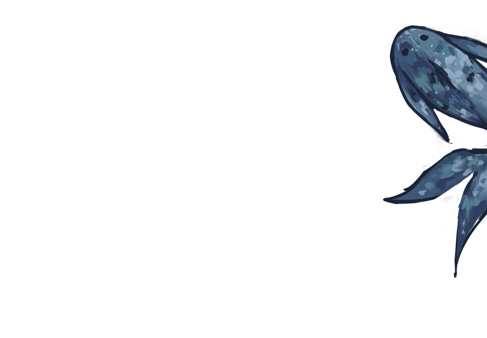

Drawing Tool
June 2023
Created a drawing application using Python, turtle, time, and math modules, where users can customize brush colour, change thickness, erase, and undo recent brushstrokes. Additionally, I drew and designed all of the icons used on Procreate.

Leaping Towards Sustainability
March 2024
Created the UI/UX Design for a mobile application to gamify sustainability, energy conservation, and healthy living. Presented project in the SFU Hack the Future Hackathon to a panel of 6+ judges.

